Sample code for log-likelihood calibration¶
About this document¶
from swift2.doc_helper import pkg_versions_info
print(pkg_versions_info("This document was generated from a jupyter notebook"))
This document was generated from a jupyter notebook on 2025-03-27 17:24:58.815735
swift2 2.5.1
uchronia 2.6.2
Setting up a calibration on daily data¶
We will use some sample data from (MMH) included in the package
from cinterop.timeseries import as_timestamp
from swift2.doc_helper import get_free_params, sample_series, set_loglik_param_keys
from swift2.parameteriser import (
concatenate_parameterisers,
create_parameter_sampler,
create_parameteriser,
create_sce_termination_wila,
extract_optimisation_log,
get_default_sce_parameters,
parameteriser_as_dataframe,
sort_by_score,
)
from swift2.simulation import create_subarea
from swift2.utils import c, mk_full_data_id, paste0
from swift2.vis import OptimisationPlots
s = as_timestamp('1990-01-01')
e = as_timestamp('2005-12-31')
rain = sample_series('MMH', 'rain')[slice(s, e)]
evap = sample_series('MMH', 'evap')[slice(s, e)]
flow = sample_series('MMH', 'flow')[slice(s, e)]
count 5844.000000
mean 3.545405
std 7.737554
min 0.000000
25% 0.000000
50% 0.283600
75% 3.308775
max 97.645500
dtype: float64
count 5844.000000
mean -1.993059
std 16.361702
min -99.999000
25% 0.194400
50% 0.438400
75% 0.900200
max 17.221100
dtype: float64
We need to adjust the observed flow, as the SWIFTv1 legacy missing value code is -99.
1990-01-01 0.2577
1990-01-02 0.2459
1990-01-03 0.2374
1990-01-04 0.2218
1990-01-05 0.2127
...
2005-12-27 0.3477
2005-12-28 0.3314
2005-12-29 0.3333
2005-12-30 0.3066
2005-12-31 0.2896
Length: 5844, dtype: float64
Catchment setup¶
Let's create a single catchment setup, using daily data. We need to specify the simulation time step to be consistent with the daily input data.
ms = create_subarea('GR4J', 1.0)
from cinterop.timeseries import xr_ts_end, xr_ts_start
s = xr_ts_start(rain)
e = xr_ts_end(rain)
ms.set_simulation_span(s, e)
ms.set_simulation_time_step('daily')
Assign input time series
sa_name = ms.get_subarea_names()[0]
ms.play_subarea_input(rain, sa_name, "P")
ms.play_subarea_input(evap, sa_name, "E")
Model variables identifiers are hierarchical, with separators '.' and '|' supported. The "dot" notation should now be preferred, as some R functions producing data frames may change the variable names and replace some characters with '.'.
['subarea.Subarea.areaKm2', 'subarea.Subarea.P', 'subarea.Subarea.E', 'subarea.Subarea.En', 'subarea.Subarea.LAI', 'subarea.Subarea.runoff', 'subarea.Subarea.S', 'subarea.Subarea.R', 'subarea.Subarea.TWS', 'subarea.Subarea.Eactual', 'subarea.Subarea.Ps', 'subarea.Subarea.Es', 'subarea.Subarea.Pr', 'subarea.Subarea.ech1', 'subarea.Subarea.ech2', 'subarea.Subarea.Perc', 'subarea.Subarea.alpha', 'subarea.Subarea.k', 'subarea.Subarea.x1', 'subarea.Subarea.x2', 'subarea.Subarea.x3', 'subarea.Subarea.x4', 'subarea.Subarea.UHExponent', 'subarea.Subarea.PercFactor', 'subarea.Subarea.OutflowVolume', 'subarea.Subarea.OutflowRate']
gr4_state_names = paste0(root_id, c('runoff', 'S', 'R', 'Perc'))
for name in gr4_state_names:
ms.record_state(name)
Let's check that one simulation runs fine, before we build a calibration definition.
[<matplotlib.lines.Line2D at 0x7f04f7a3d850>]
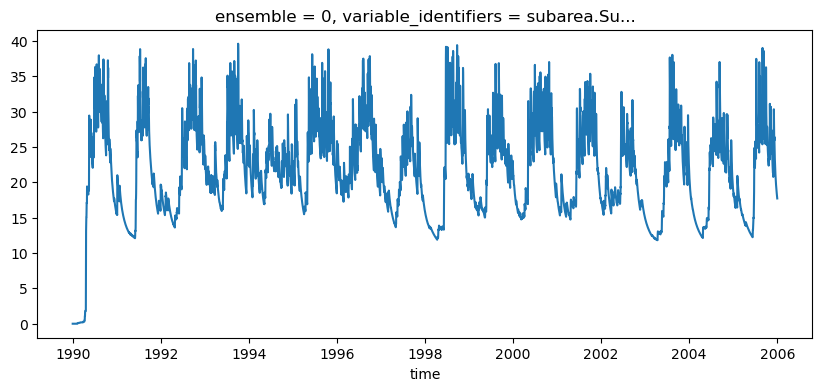
Let's build the objective calculator that will guide the calibration process:
runoff_depth_varname = 'subarea.Subarea.runoff'
mod_runoff = ms.get_recorded(runoff_depth_varname)
# zoo::index(flow) = zoo::index(mod_runoff)
objective = ms.create_objective(runoff_depth_varname, flow, 'log-likelihood', w, e)
[<matplotlib.lines.Line2D at 0x7f04f7aed490>]
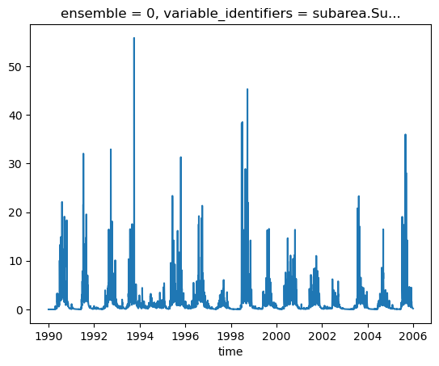
Parameterisation¶
Define the feasible parameter space, using a generic parameter set for the model parameters. This is 'wrapped' by a log-likelihood parameter set with the extra parameters used in the log likelihood calculation, but which exposes all the parameters as 8 independent degrees of freedom to the optimiser.
pspec_gr4j = get_free_params('GR4J')
pspec_gr4j.Value = c(542.1981111, -0.4127542, 7.7403390, 1.2388548)
pspec_gr4j.Min = c(1,-30, 1,1)
pspec_gr4j.Max = c(3000, 30, 1000, 240)
pspec_gr4j.Name = paste0(root_id, pspec_gr4j.Name)
maxobs = np.max(flow)
p = create_parameteriser(type='Generic', specs=pspec_gr4j)
set_loglik_param_keys(a='a', b='b', m='m', s='s', ct="ct", censopt='censopt')
censor_threshold = maxobs / 100 # TBC
censopt = 0.0
loglik = create_parameteriser(type='no apply')
loglik.add_to_hypercube(
pd.DataFrame({
"Name": c('b','m','s','a','maxobs','ct', 'censopt'),
"Min": c(-30, 0, -10, -20, maxobs, censor_threshold, censopt),
"Max": c(5, 0, 10, 0, maxobs, censor_threshold, censopt),
"Value": c(-7, 0, 0, -10, maxobs, censor_threshold, censopt),
}
) )
p = concatenate_parameterisers(p, loglik)
p.as_dataframe()
| Name | Value | Min | Max | |
|---|---|---|---|---|
| 0 | subarea.Subarea.x1 | 542.198111 | 1.000000 | 3000.000000 |
| 1 | subarea.Subarea.x2 | -0.412754 | -30.000000 | 30.000000 |
| 2 | subarea.Subarea.x3 | 7.740339 | 1.000000 | 1000.000000 |
| 3 | subarea.Subarea.x4 | 1.238855 | 1.000000 | 240.000000 |
| 4 | b | -7.000000 | -30.000000 | 5.000000 |
| 5 | m | 0.000000 | 0.000000 | 0.000000 |
| 6 | s | 0.000000 | -10.000000 | 10.000000 |
| 7 | a | -10.000000 | -20.000000 | 0.000000 |
| 8 | maxobs | 17.221100 | 17.221100 | 17.221100 |
| 9 | ct | 0.172211 | 0.172211 | 0.172211 |
| 10 | censopt | 0.000000 | 0.000000 | 0.000000 |
Check that the objective calculator works, at least with the default values in the feasible parameter space:
{'scores': {'Log-likelihood': -1e+20}, 'sysconfig': Name Value Min Max
0 subarea.Subarea.x1 542.198111 1.000000 3000.000000
1 subarea.Subarea.x2 -0.412754 -30.000000 30.000000
2 subarea.Subarea.x3 7.740339 1.000000 1000.000000
3 subarea.Subarea.x4 1.238855 1.000000 240.000000
4 b -7.000000 -30.000000 5.000000
5 m 0.000000 0.000000 0.000000
6 s 0.000000 -10.000000 10.000000
7 a -10.000000 -20.000000 0.000000
8 maxobs 17.221100 17.221100 17.221100
9 ct 0.172211 0.172211 0.172211
10 censopt 0.000000 0.000000 0.000000}
plot_two_series(flow, mod_runoff, ylab="obs/mod runoff", start_time = "2000-01-01", end_time = "2002-12-31", names=['observed','modelled'])
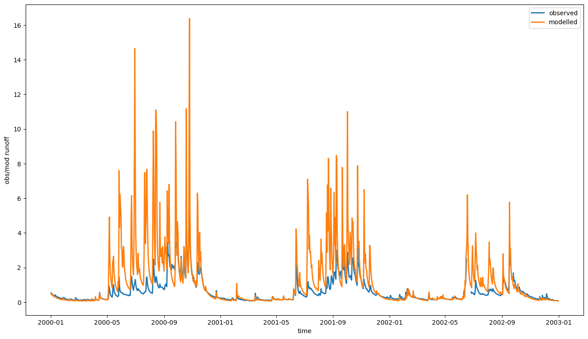
Calibration¶
Build the optimiser definition, instrument with a logger.
# term = getMaxRuntimeTermination(max_hours = 0.3/60) # ~20 second appears enough with SWIFT binaries in Release mode
# term = getMarginalTermination(tolerance = 1e-06, cutoff_no_improvement = 10, max_hours = 0.3/60)
term = create_sce_termination_wila('relative standard deviation', c('0.005',str(1/60)))
sce_params = get_default_sce_parameters()
urs = create_parameter_sampler(0, p, 'urs')
optimiser = objective.create_sce_optim_swift(term, sce_params, urs)
calib_logger = optimiser.set_calibration_logger('')
CPU times: user 5min 7s, sys: 44.1 ms, total: 5min 7s
Wall time: 1min
opt_log = extract_optimisation_log(optimiser, fitness_name = 'Log-likelihood')
geom_ops = opt_log.subset_by_message(pattern= 'Initial.*|Reflec.*|Contrac.*|Add.*')
ll_max = max(geom_ops._data['Log-likelihood'].values)
ll_min = np.median(geom_ops._data['Log-likelihood'].values)
Parameter plots¶
p_var_ids = p.as_dataframe().Name.values
v = OptimisationPlots(geom_ops)
for pVar in p_var_ids:
g = v.parameter_evolution(pVar, obj_lims=[ll_min, ll_max])
plt.gcf().set_size_inches(10,8)
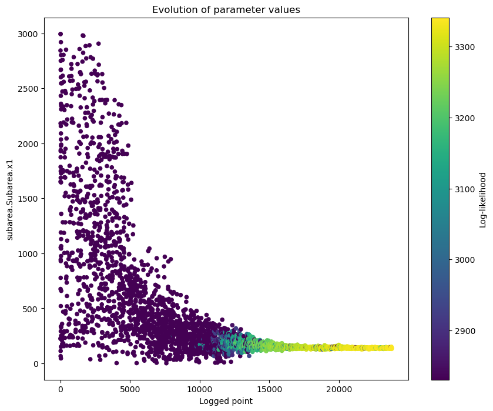
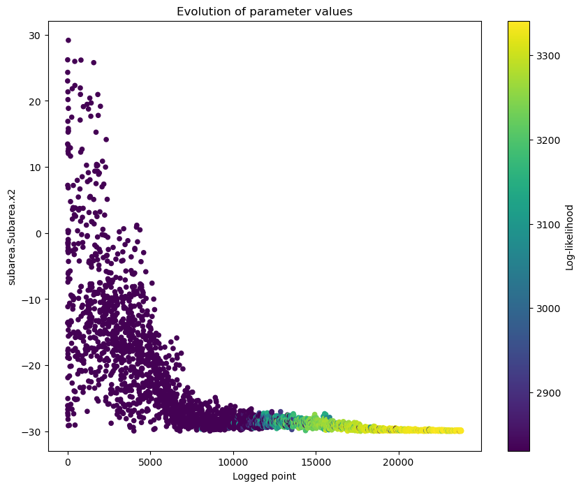
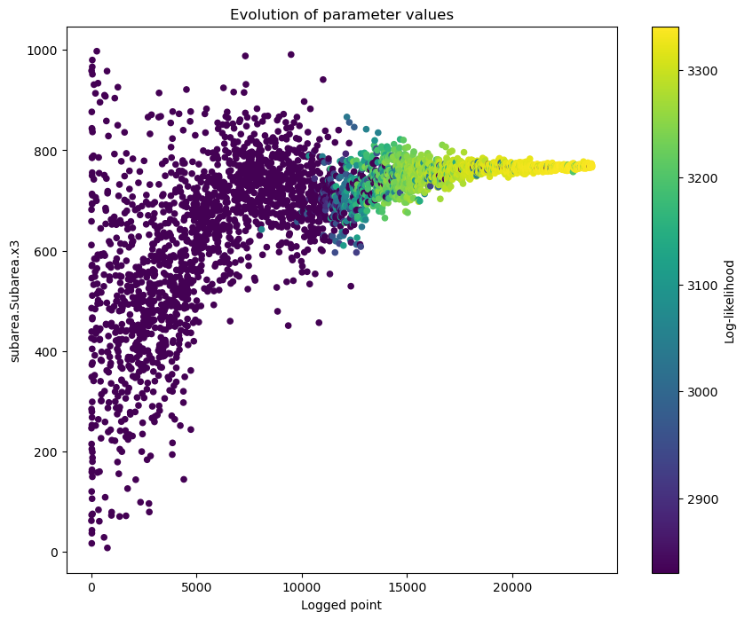
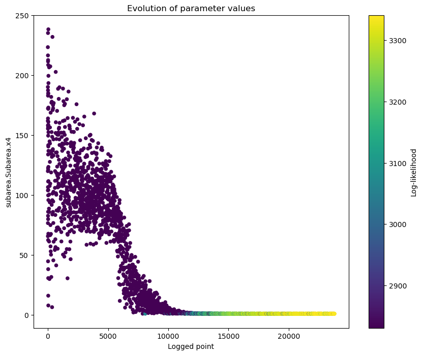
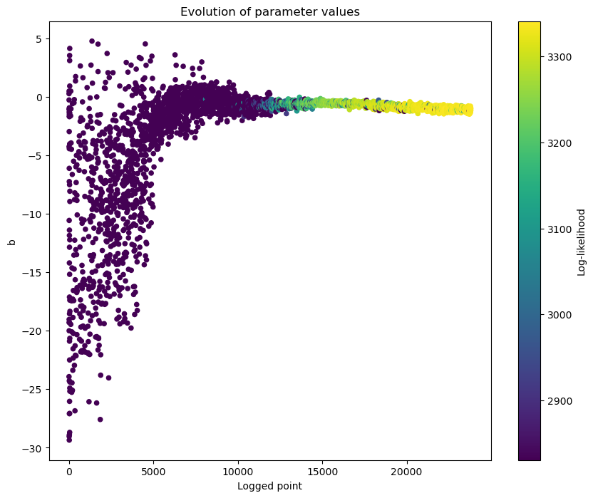
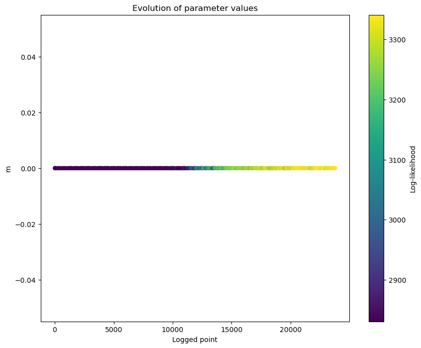
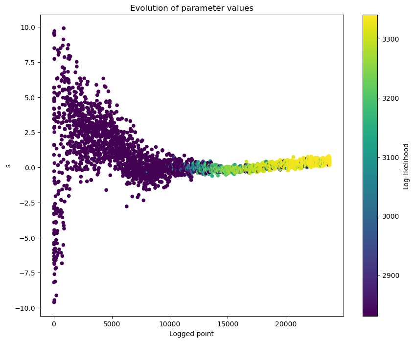
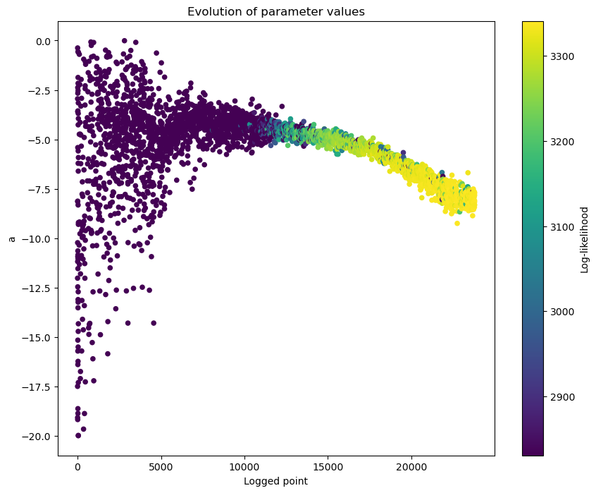

Finally, get a visual of the runoff time series with the best known parameter set (the penultimate entry in the data frame with the log of the calibration process).
sortedResults = sort_by_score(calib_results, 'Log-likelihood')
sortedResults.as_dataframe().head().T
| 0 | 1 | 2 | 3 | 4 | |
|---|---|---|---|---|---|
| Log-likelihood | 3340.915859 | 3340.771324 | 3340.698917 | 3340.632166 | 3340.481544 |
| subarea.Subarea.x1 | 142.311803 | 143.683797 | 141.209587 | 138.884465 | 138.401395 |
| subarea.Subarea.x2 | -29.926501 | -29.985372 | -29.892518 | -29.987330 | -29.915535 |
| subarea.Subarea.x3 | 769.304425 | 771.741061 | 768.582954 | 768.664694 | 768.479620 |
| subarea.Subarea.x4 | 1.001487 | 1.000453 | 1.001558 | 1.001635 | 1.002588 |
| b | -1.069403 | -1.180434 | -1.182628 | -0.981440 | -1.247725 |
| m | 0.000000 | 0.000000 | 0.000000 | 0.000000 | 0.000000 |
| s | 0.394041 | 0.514402 | 0.517914 | 0.318156 | 0.597338 |
| a | -7.887809 | -7.851411 | -8.134082 | -7.777277 | -8.522691 |
| maxobs | 17.221100 | 17.221100 | 17.221100 | 17.221100 | 17.221100 |
| ct | 0.172211 | 0.172211 | 0.172211 | 0.172211 | 0.172211 |
| censopt | 0.000000 | 0.000000 | 0.000000 | 0.000000 | 0.000000 |
best_pset = calib_results.get_best_score('Log-likelihood').parameteriser
best_pset.apply_sys_config(ms)
ms.exec_simulation()
mod_runoff = ms.get_recorded(runoff_depth_varname)
# joki::plot_two_series(flow, mod_runoff, ylab="obs/mod runoff", startTime = start(flow), endTime = end(flow))
<xarray.DataArray (variable_identifiers: 1, ensemble: 1, time: 5844)> Size: 47kB
array([[[0. , 0. , 0. , ..., 0.41868723,
0.41110903, 0.40375453]]], shape=(1, 1, 5844))
Coordinates:
* ensemble (ensemble) int64 8B 0
* time (time) datetime64[ns] 47kB 1990-01-01 ... 2005-12-31
* variable_identifiers (variable_identifiers) object 8B 'subarea.Subarea.r...mod_runoff.squeeze(drop=True).sel(time=slice(e - pd.offsets.DateOffset(years=1), e)).plot(figsize=(16,9))
[<matplotlib.lines.Line2D at 0x7f04df4f7e50>]
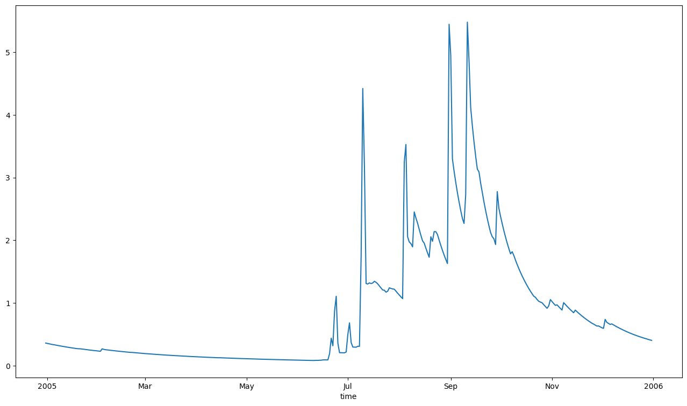
plot_two_series(flow, mod_runoff, ylab="obs/mod runoff", start_time = "2000-01-01", end_time = "2002-12-31", names=['observed','modelled'])
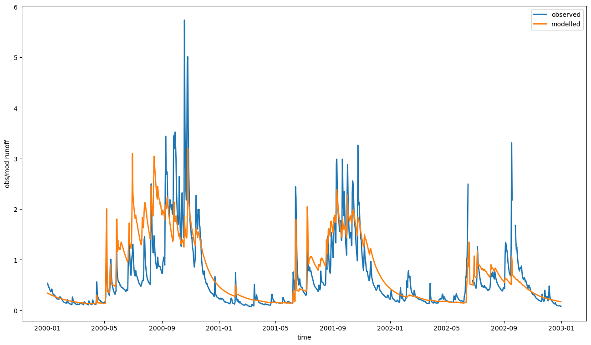